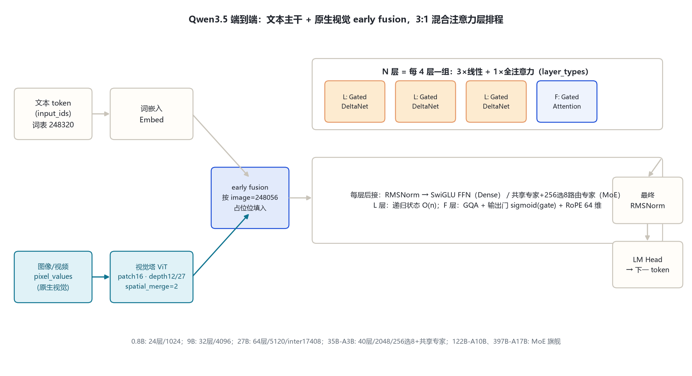
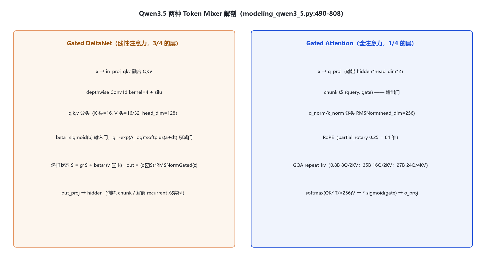

本页以 本地真实 config.json（Qwen3.5-0.8B-Instruct、Qwen3.5-35B-A3B-GPTQ-Int4）与 transformers 源码（本地 E:\transformers，models\qwen3_5\、models\qwen3_5_moe\）为唯一依据；27B 数字取自已核对官方 model card。家族分两支：Dense（0.8B / 9B / 27B）与 MoE（35B-A3B / 122B-A10B / 397B-A17B），全系原生多模态。
0.8B 与 35B-A3B 为本地 config 逐字段核对；9B/27B 来自官方 model card；122B-A10B / 397B-A17B 为 MoE 旗舰（精确 hidden/层数标待确认）。全家族共用 layer_types 周期 [linear_attention ×3, full_attention ×1]（full_attention_interval=4）。
| 字段 | 0.8B | 9B | 27B | 35B-A3B | 122B-A10B | 397B-A17B |
|---|---|---|---|---|---|---|
| model_type | qwen3_5 | qwen3_5 | qwen3_5 | qwen3_5_moe | qwen3_5_moe | qwen3_5_moe |
| 形态 | Dense+视觉 | Dense+视觉 | Dense+视觉 | MoE+视觉 | MoE+视觉 | MoE+视觉 |
| hidden_size | 1024 | 4096 | 5120 | 2048 | 待确认 | 待确认 |
| 层数 | 24 | 32 | 64 | 40 | 待确认 | 待确认 |
| Gated Attn Q/KV | 8 / 2 | — | 24 / 4 | 16 / 2 | — | — |
| head_dim（全注意力） | 256 | 256 | 256 | 256 | 256 | 256 |
| 线性 K/V 头 | 16 / 16 | — | 16 / 48 | 16 / 32 | — | — |
| 线性 head_dim / conv | 128 / 4 | 128 / 4 | 128 / 4 | 128 / 4 | 128 / 4 | 128 / 4 |
| Dense FFN intermediate | 3584 | 待确认 | 17408 | — | — | — |
| 专家（总/激活） | — | — | — | 256 / 8moe_inter 512 | — | — |
| 共享专家 intermediate | — | — | — | 512 | — | — |
| vocab | 248320 | 248320 | 248320 | 248320 | 248320 | 248320 |
| max_position | 262144 | 262144 | 262144 | 262144 | 262144 | 262144 |
要点：① 每 4 层 = 3×Gated DeltaNet（线性）+ 1×Gated Attention（全注意力）；② 线性与全注意力头配置不同（线性 K16/V16~32、head_dim 128；全注意力 GQA、head_dim 256）；③ MoE 显式带共享专家（35B config 核实 shared_intermediate=512），与 Qwen3 MoE 的纯路由不同。
文本 token 与图像像素两路输入 → 视觉塔（patch 16、depth 12/27、spatial_merge 2）编码投影 → early fusion 进统一序列 → N 个 DecoderLayer（按 layer_types 交替：线性层走 Gated DeltaNet 递归状态，全注意力层走 Gated Attention + 输出门）→ 最终 RMSNorm → LM Head。

Qwen3_5DecoderLayer（modeling_qwen3_5.py:848-901）：block_type=config.layer_types[layer_idx]——linear_attention 挂 GatedDeltaNet，full_attention 挂 GatedAttention；两种层都接同一 SwiGLU MLP。

融合 QKV → depthwise Conv1d(kernel 4) → 分头；beta 输入门、g 衰减门递归更新状态 S = g*S + beta*(v⊗k)，把 O(n²) 降到近 O(n)。
q_proj 输出翻倍并 chunk 出 gate；注意力输出乘 sigmoid(gate)（attn_output_gate=true）；逐头 QK-Norm；RoPE 仅 256 维头的 64 维。
共享专家带 sigmoid 门常连，top-8 路由 256 专家，两者输出相加；路由器 aux loss 系数 0.001。
mtp_num_hidden_layers=1、mtp_use_dedicated_embeddings=false：训练时多步预测，推理投机解码加速。thinking 默认常开、取消软切换。
| 单元 | 0.8B 头配置 | 35B 头配置 | 27B 头配置 | 头维度 / 位置编码 |
|---|---|---|---|---|
| Gated DeltaNet（线性） | K16 / V16 | K16 / V32 | QK16 / V48 | 128 · 门控+conv |
| Gated Attention（全注意力） | Q8 / KV2 | Q16 / KV2 | Q24 / KV4 | 256 · RoPE 64 维 |
3/4 线性层压长序列成本，1/4 全注意力保精确 recall——「近 O(n) 仍保注意力精度」的混合设计。
| 字段（vision_config） | 0.8B | 35B-A3B |
|---|---|---|
| hidden_size / depth | 768 / 12 | 1152 / 27 |
| num_heads / intermediate | 12 / 3072 | 16 / 4304 |
| patch / temporal_patch / merge | 16 / 2 / 2 | 16 / 2 / 2 |
| out_hidden_size（→文本 hidden） | 1024 | 2048 |
| hidden_act | gelu_pytorch_tanh | gelu_pytorch_tanh |
与 Qwen3-VL 相比，Qwen3.5 把视觉能力原生化进主 config（不再是可选 VL 变体），全系 Dense/MoE 都带视觉塔；文本侧 M-RoPE section=[11,11,10]。transformers v5 用 AutoModelForImageTextToText 加载。
| token | ID | 含义 | 来源 |
|---|---|---|---|
| eos_token_id | 248044 | 序列结束 | text_config |
| image_token_id | 248056 | 图像占位 | 顶层 |
| video_token_id | 248057 | 视频占位 | 顶层 |
| vision_start / end | 248053 / 248054 | 图像块起止 | 顶层 |
词表 248320（padded）——从 Qwen1–Qwen3 的 151936 一次性扩到 248320。仓库名已去掉 -Instruct 后缀（Qwen/Qwen3.5-0.8B）。
| 维度 | Qwen3（基线） | Qwen3.5（家族） |
|---|---|---|
| 注意力 | 全注意力 GQA（head_dim 128）+ QK-Norm | Gated DeltaNet 线性 + Gated Attention 全注意力 3:1 混合 |
| 输出门 | 无 | attn_output_gate=true（sigmoid(gate)） |
| 词表 | 151936 | 248320（padded） |
| 上下文 | 文本 40960 / VL 262144 | 262144 原生 → YaRN 1M |
| 多模态 | 可选 3-VL 变体 | 全系原生视觉语言 |
| MoE | 128 选 8，无共享专家 | 256 选 8 + 显式共享专家 |
| MTP | qwen3_next（有） | MTP multi-steps（mtp 层数 1） |
| thinking | 默认开 + /think /no_think 软切换 | 默认常开、取消软切换 |
核验日期 2026-10-26。122B/397B 的 hidden/层数未拉取本地 config，标待确认；其余数字来自本地 config 或已核实官方 card。